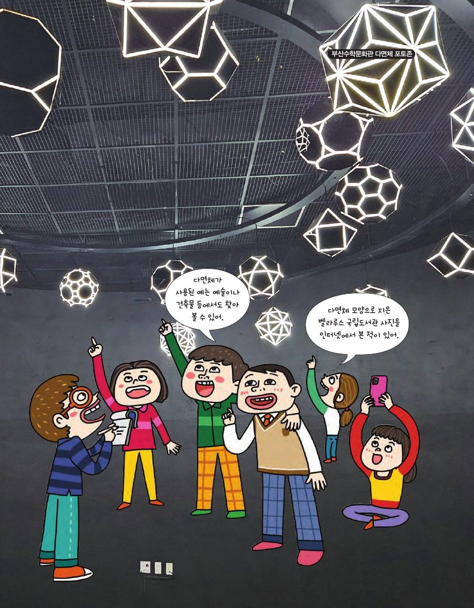

탄소 60개로 된 풀러렌은 축구공 모양의 아르키메데스 다면체예요. 부산수학문화관 천장에 매달린 다면체들을 손가락으로 돌려 보세요.
★ 이 단원에서는 — 아르키메데스 다면체의 뜻과 성질을 이해하고, 정다면체로 만드는 방법을 설명할 수 있다.

📍 부산수학문화관정다면체는 모든 면이 합동인 정다각형이고 각 꼭짓점에 모이는 면의 수가 같은 볼록 다면체. 5종류뿐이에요. 드래그해서 돌려 보고 표를 채워 보세요.
| 정사면체 | 정육면체 | 정팔면체 | 정십이면체 | 정이십면체 | |
|---|---|---|---|---|---|
| 면의 모양 | 정삼각형 | 정사각형 | 정삼각형 | 정오각형 | 정삼각형 |
| V | |||||
| E | |||||
| F | |||||
| V−E+F |
어떤 볼록 다면체든 V − E + F = 2. 이것을 오일러 다면체 정리라고 해요. 축구공(V=60, E=90, F=32)도 60−90+32=2!
두 종류 이상의 정다각형으로 이루어지고, 각 꼭짓점에 모인 면의 배열이 같은 볼록 다면체(각기둥·엇각기둥 제외). 정다면체를 깎거나(절단), 부풀려서 만들 수 있어요.
정육면체를 꼭짓점에서 조금 깎으면 깎은 정육면체(3,8,8), 모서리 중점까지 깎으면 육팔면체(3,4,3,4)! 정십이면체를 중점까지 깎으면 십이이십면체(3,5,3,5)예요.
다면체를 돌려 보고 한 꼭짓점에 모인 면의 배열을 고르세요. 13종 중 3D로 볼 수 있는 11종이 나와요.
❓ 한 꼭짓점에 모인 면의 배열은?
정육면체 모서리의 중점을 꼭짓점으로 하면 육팔면체! 정팔면체로 해도 같은 모양이 나와요. 두 정다면체 위에 중점 다면체를 겹쳐 보세요.
정이십면체로 보면 반대로, 십이이십면체의 정삼각형 20개는 정이십면체의 면, 정오각형 12개는 정이십면체의 꼭짓점과 같아요.